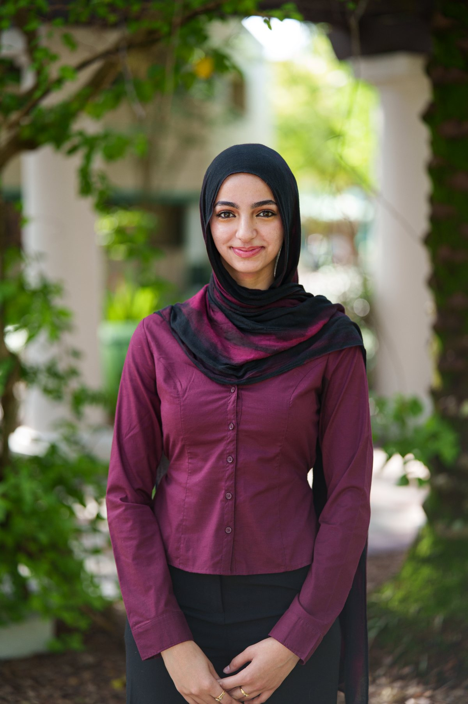

Dassault Systèmes · SOLIDWORKS
CAD Design Associate
Earned November 21, 2025
Credential ID: C-9E2YQTLAFW
I’m a Mechanical Engineering student at the University of South Florida interested in vehicle design, aerodynamics, simulation, testing, and additive manufacturing.
My path into engineering started with donated 3D printers at my high school. I learned how to use them because they were sitting unused, then kept building increasingly functional projects. That experience made iteration feel normal: if the part does not fit, identify why, change the model, and print it again.
Since then, I have worked on an emergency-response drone, an Electrathon race car, a desktop wind tunnel, emergency mesh communications, structural competition work, and rail testing at the Transportation Technology Center.
Formula 1 and high-performance cars are the biggest influence on the type of mechanical engineering I want to pursue. I am especially interested in vehicle aerodynamics, test engineering, mechanical design, and performance development.

Three Dassault Systèmes SOLIDWORKS Associate certifications earned through academic exams at the University of South Florida.
Earned November 21, 2025
Credential ID: C-9E2YQTLAFW
Earned November 14, 2025
Credential ID: C-DXBZG2LQP5
Earned November 13, 2025
Credential ID: C-F4MCXB7LSJ
For internship, project, or engineering opportunities, the easiest ways to reach me are email or LinkedIn.